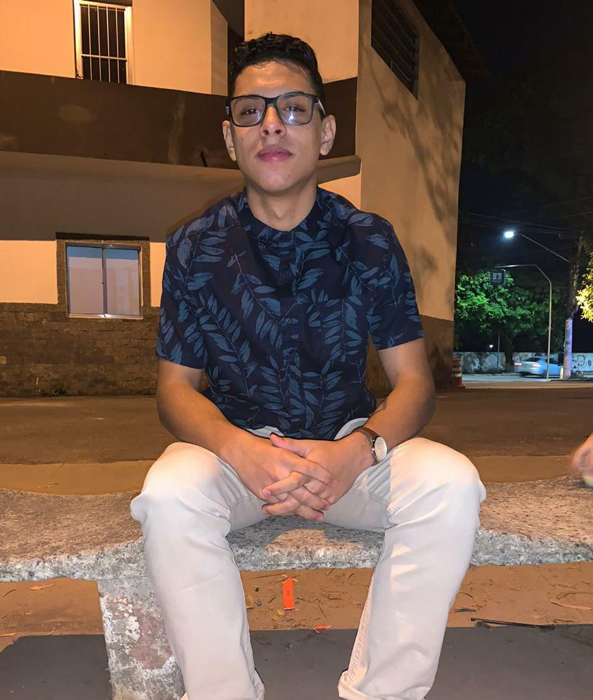
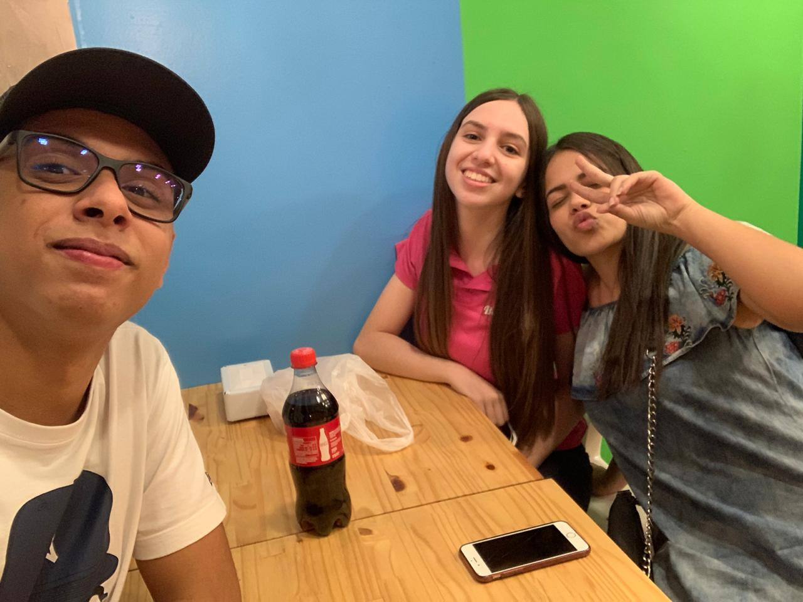
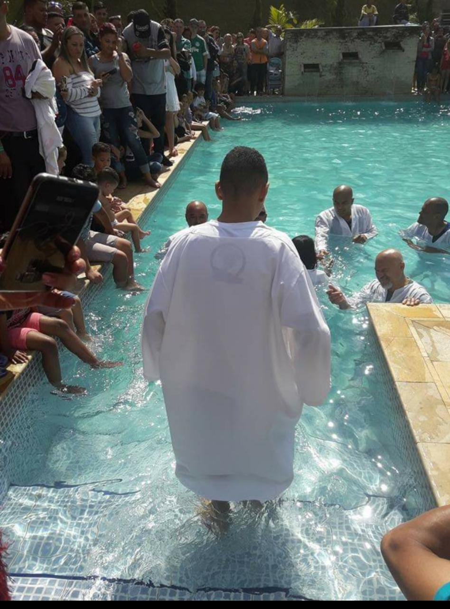

Um Sonho
Pode Se Tornar Realidade,
Basta Acreditar
"Permita-se Ser Impactado
Com O Sonho Que Está Dentro de Você,
E Esse Mesmo Se Tornará A Sua Realidade"
Ruiz, Nicolas 2020

Quem quer arruma um jeito, quem não quer arruma uma desculpa!
Uso muito essa frase, pois muitas vezes já escutei palavras como as do tipo, "Não tenho dom", "Não tenho tempo", quando na verdade são só desculpa geradas para esconder que na realidade é a falta de prioridade, e por isso a frase se encaixa com a minha filosofia de vida.
Sobre: Nicolas Ruiz Nogueira Xavier

Missão
Tornar a vida de pessoas mais felizes,
E marcar vidas com simplicidade, amor e carinho.
Demonstrar o amor pelas vidas, não pelas atitudes.

Visão
Ser um grande Ser Humano que inspire e transforme a vida de pessoas.
Ajudar e incentivar o máximo de pessoas para alcançar seus objetivos.

Valores
Respeito e Reverência acima de qualquer coisa.
Um bom ouvinte e aberto a mudar quando necessário.

Referência
Jesus, a pessoa que mais me ensina desde sempre e pelo qual sou muito grato.
Se não fosse por Ele na minha vida, talvez nem vivo estaria ou então não seria a mesma pessoa que sou hoje.
Ele chegou, e Mudou(Para Melhor).

Meta
Resgatar o máximo de pessoas e vidas que se encontram tristes, e tentar mostrar o valor que ela tem.
Viajar muito e conhecer diversos lugares, junto com minha família e amigos.
Usar o máximo das minhas habilidades para sempre aprender algo novo.
Família

Guilherme e Gustavo
São os primos que tenho mais contato por morarem perto da minha casa, Guilherme tem 8 anos e o Gustavo 3 anos.
"Agradeço a meu Deus toda vez que me lembro de vocês." Filipenses 1:3

Pai- Fábio
Tenho muito amor, respeito e admiração pela pessoa que ele é e pela influência que tem sobre minha vida.

Mãe- Simone
Mulher forte e guerreira, que sempre lutou para chegar onde está e com muito esforço um dia espero conseguir ir mais longe da onde ela já está, amo e admiro demais.

Tios(maternos)-Silvano e Fernanda
Não sou tão próximo, mas tenho um enorme carinho, mesmo com a distância, estamos sempre conectados.

Tios(paternos)-Flávia e Anderson
Estão sempre comigo, por morar mais perto, são um canal de aprendizado, amor e respeito, além de tios, são meus líderes em uma célula da igreja(Casa de Zadoc).
Amigos

Mariana e Giulia
Estão comigo já fazem 13 anos e nunca mudam, sempre íntegras.
"...mas existe amigo
mais apegado que um irmão."
Provérbios 18:24

Banda do Louvor da Minha Igreja
Meus parceiros de música, um sempre apoia o outro e seguimos em frente com um propósito maior.

Um grupo seleto da escola onde frenquentei
Grupo de amigos onde quluqer pessoa é bem-vinda se desejar estar conosco, geralmente gostamos de sair para nos divertir e descobrir lugares novos.

Olimpiadas 2019
Um grupo de pessoas liderados por 3 pessoas que estavem no último ano do ensimo Médio, e um deles sendo eu, lideramos esse grupo onde conseguimos ganhar o segundo lugar, porém todos se divertiram e recebemos feedbacks de uma excelente liderança.

Amigos de Igreja
Alguma das pessoas que estão sempre comigo nos cultos da minha igreja e que são pessoas maravilhosas e que possuem uma capacidade incrível.

Conquista #TOP1 - Batismo(2017)
A expressão "batismo nas águas" remete para o ato de uma pessoa declarar publicamente a sua fé em Jesus, indicando a sua vontade de ser obediente a Deus durante a sua vida.
Depois da vinda de Jesus, o ato de ser submerso durante o batismo é uma alusão à morte e sepultamento de Jesus e o ato de emergir está relacionado com a sua ressurreição.
Fui batizado as 15 anos, no ano de 2017, na Igreja Evangélica A Videira e considero a melhor conquista e feito da minha vida!
Conquista #TOP2 - Orador da Turma(2020)
No ano de 2019, estava no último ano do segundo grau, no Colégio Phoenix, onde estudei lá desde os 5 anos e realizei o ensino fundamental I e II e o Ensino Médio, e fui escolhido pela sala para ser o orador da Turma na nossa formatura que foi realizada no dia 01/02/2020.
Conquista #TOP3 - BandTec(2020)
Uma das escolhas mais importantes e sou muito grato a Deus primeiramente, meus Pais e meu Amigos que sempre acreditaram que eu seria capaz de entrar nessa Faculdade incrível pela qual sou muito apaixonado, pelo ambiente, idéias, principíos e pela missão.
Hoje, Eu não me vejo estudando em outro lugar, a não ser na BandTec, simplesmente explêndido.